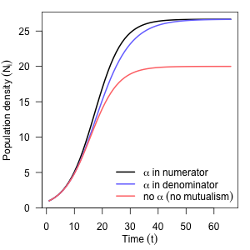

home
Department of Biology, Case Western Reserve University

Growth rates in the presence of mutualist, both density-independent (left) and -dependent (right)

Phase plane of mutualist populations, with null clines for N1 (blue) and N2 (red)

Schematic of two heterogeneous populations interacting through dispersal

Chipmunks disperse some species' seeds to safe sites in fire-prone ecosystems

Dispersal can be viewed from the parent (pole) as the probability of dispersal to a point (left) or annulus (right)

Quasi-potential for a plankton-consumer model
- 
Mutualism reducing intraspecific competition (black) and increasing carrying capacity (blue)
Hello, and thank you for visiting my website. Its purpose of this is to showcase my academic research interests and provide information for current and future collaborators.
I have organized pages with:
- a brief description of my research and research interests,
- links to courses I have taught and / or organized,
- publications, with links to the papers, reprints, code, and data,
- an experimental news/blog page,
- some fun quotes I've collected over the years, and
- my contact information.
Thanks again, and feel free to contact my with any questions.